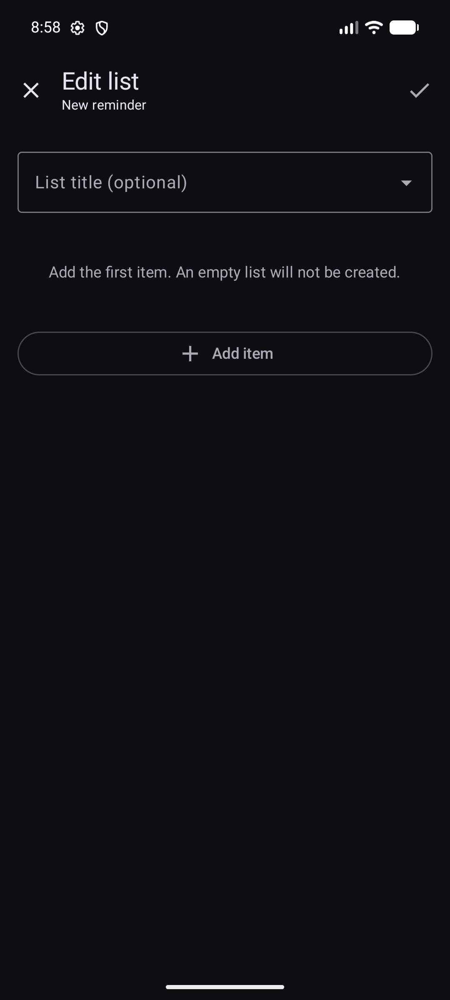

Checklists
Keep the steps beside the reminder that needs them.
A reminder can contain ordered lists with optional names. Each scheduled alert receives its own copy of those items, so checking a box affects that alert rather than rewriting the reminder template.
When a checklist helps
Use a list when the reminder title tells you what to do but the task has several concrete steps. Examples include packing items before leaving, preparing documents for a meeting, or following a short maintenance routine.
Create and edit the first list
Create or edit a reminder and find Lists.

On the Reminders screen, choose + in the top-right corner. Then complete the reminder form and open Lists. - Choose Add list.
- Add an optional title. One unnamed list is shown without a heading; when several unnamed lists exist, DKReminder numbers them as “List 1,” “List 2,” and so on.
Choose Add item and enter each practical step

In the list editor, choose a title if needed, then select Add item. - Use Add below, Move up, or Move down to put items in a useful order.
- Choose Apply list changes, then save the reminder itself.
An empty list is not created. DKReminder also checks list, item, and text limits and explains which value must be shortened or removed.
Multiple lists and Pro
Create and edit the first list, check items in any list attached to an alert, and keep access to your saved data.
Create or structurally edit additional lists and change the order of multiple lists.
If Pro ends, additional lists are not hidden or deleted. They remain visible, their items can still be checked during an alert, and a whole additional list can be deleted. Structural editing remains read-only until Pro is available again.
Use lists during an active or full-screen alert
- Open the active alert from the notification, full-screen presentation, or Active.
- Review the compact list summaries.
- Open the list you need and check items as you complete them.
- Close the list panel and choose Done only when the alert itself is resolved, or choose Snooze to return later.
In full-screen mode, the reminder title stays at the top and the Done action stays available at the bottom. A selected list opens in its own panel so long lists do not push the primary alert actions away.
Progress belongs to one scheduled alert
- Snoozing preserves the checked items for that same alert.
- A new alert from the recurring reminder starts with unchecked items from the current reminder template.
- Editing the reminder's list does not rewrite checklist progress in alerts that already exist.
- Past occurrence details opened from Calendar can show which items were completed for that alert.
Example: check two packing items and snooze. When the same alert returns, those two stay checked. The next week's separately scheduled alert begins with a fresh unchecked copy.
Common problems and safe checks
The list disappeared while editing
Confirm that you chose Apply list changes before saving the reminder. An empty list is intentionally discarded.
An additional list is read-only
Check Pro access. Existing extra lists stay visible without Pro, but creating, reordering, or structurally editing them requires Pro.
Checking every item did not close the alert
This is expected. Choose Done separately when you are ready to resolve that alert.
A new alert has no checked items
This is also expected: each scheduled alert gets an independent fresh copy. Only Snooze preserves progress for the same alert.
Related guides
Still need help?
Email reminder@dvkworks.com and describe whether the issue is in reminder editing or in an active alert.